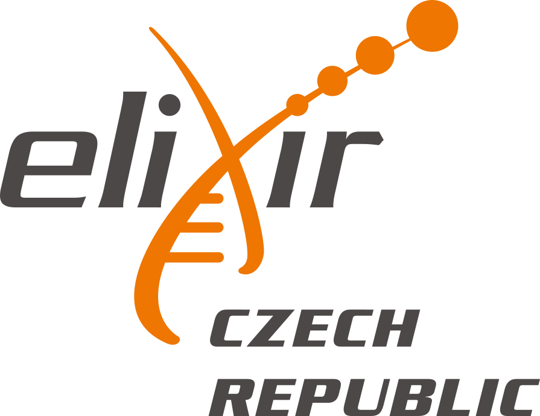

Alphafoldology
Explore the genealogy and downstream evolution of AI protein-folding tools.
Models, agents & tools for researchers
Three curated indexes for finding biological foundation models, autonomous science agents, and privacy-aware coding and data tools.

Dedicated toELIXIR-CZCzech national node of ELIXIRAs open as possible, as closed as necessary. Three evidence-aware discovery indexes for scientists working with AI.
Related community projects and ELIXIR-CZ infrastructure beyond the three curated indexes.
Explore the genealogy and downstream evolution of AI protein-folding tools.
Browse life-science tools, databases, computing, and storage services provided through ELIXIR-CZ. Access conditions vary by service.